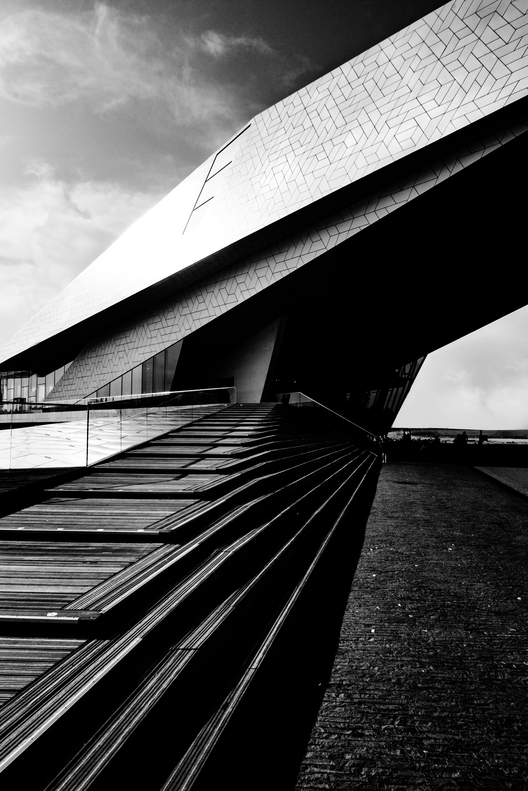

02 / OTTAWA
Jonathan Lim Intervals of light
Concrete. Glass. A repeating pause.

A STUDY IN MATERIAL & LIGHT VOL. 01 / 2026
THE NOTEBOOK01 - 03
Follow an edge. Notice a shadow. Stay with the place a little longer. Three photographs, and a few things they ask us to see.
Concrete. Glass. A repeating pause.
Depth begins where the light ends.
FIELD NOTESON LOOKING
Architecture is not still. A wall changes as the sun moves. A row of columns becomes a rhythm when you walk past. A photograph holds one moment of that conversation.
This notebook follows three of those moments: a diagonal in Amsterdam, repeated intervals in Ottawa, and a deep cut of shadow in Dusseldorf.
Return to the observations01 / AMSTERDAM
Stair. Facade. Shadow.